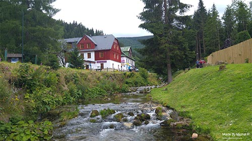

Czech Republic 
Špindlerův Mlýn, July-August 2015 - In 2015 we did a roadtrip straight to Czech republic to a very small town Špindlerův Mlýn right next to Polish border. The views just to get there were absolutely gorgeous, and then we saw the views from our hotel which were even better if that was even possible, however that came at a cost. We had to climb the mini mountain just to get to our hotel. After few days of being there, I zipped along the Labská reservoir dam to the other side... twice. If you know Polish language, you will understand just how funny the Czech language is. And by the way, if you ever are in Czech Republic, definitely try borůvkové palačinky :)
- 